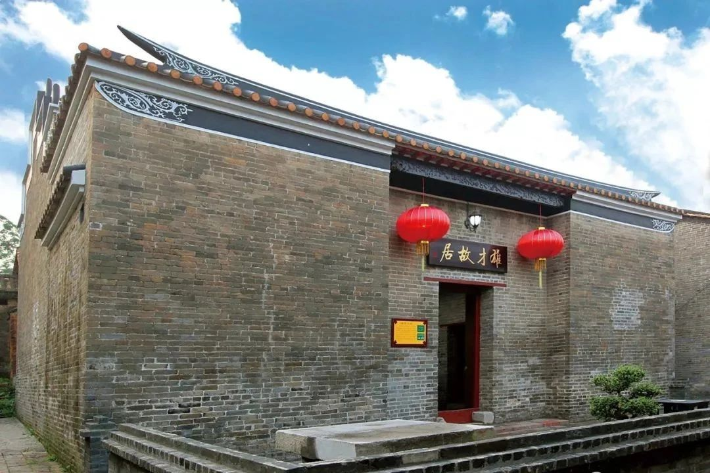
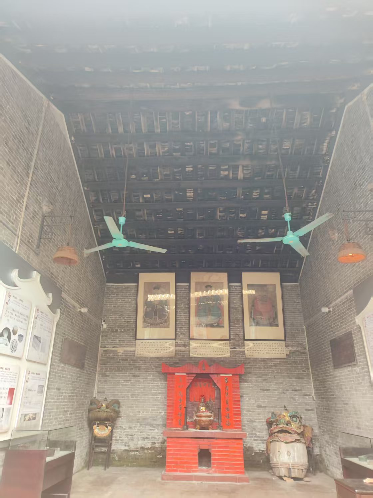
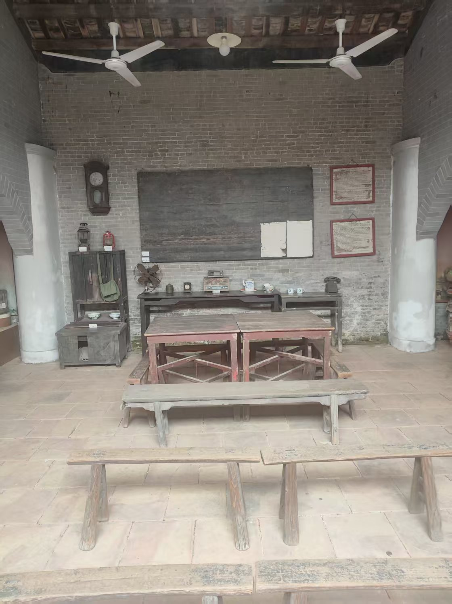
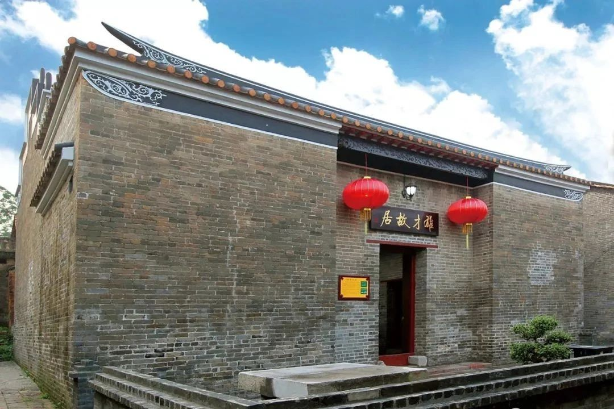
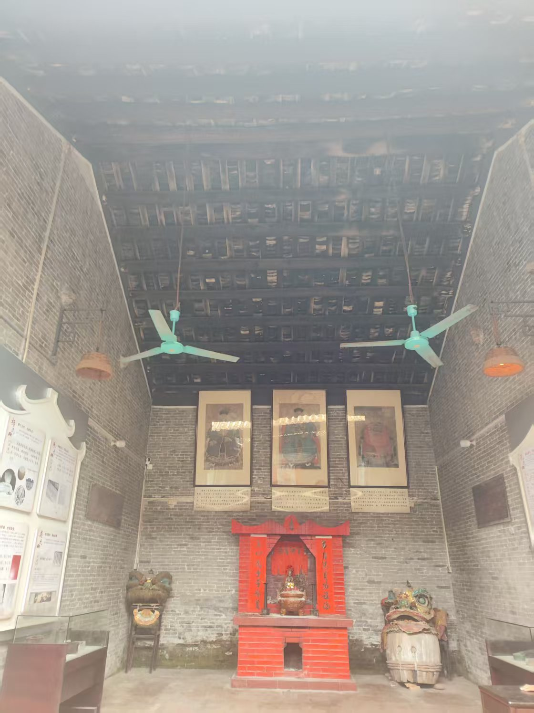
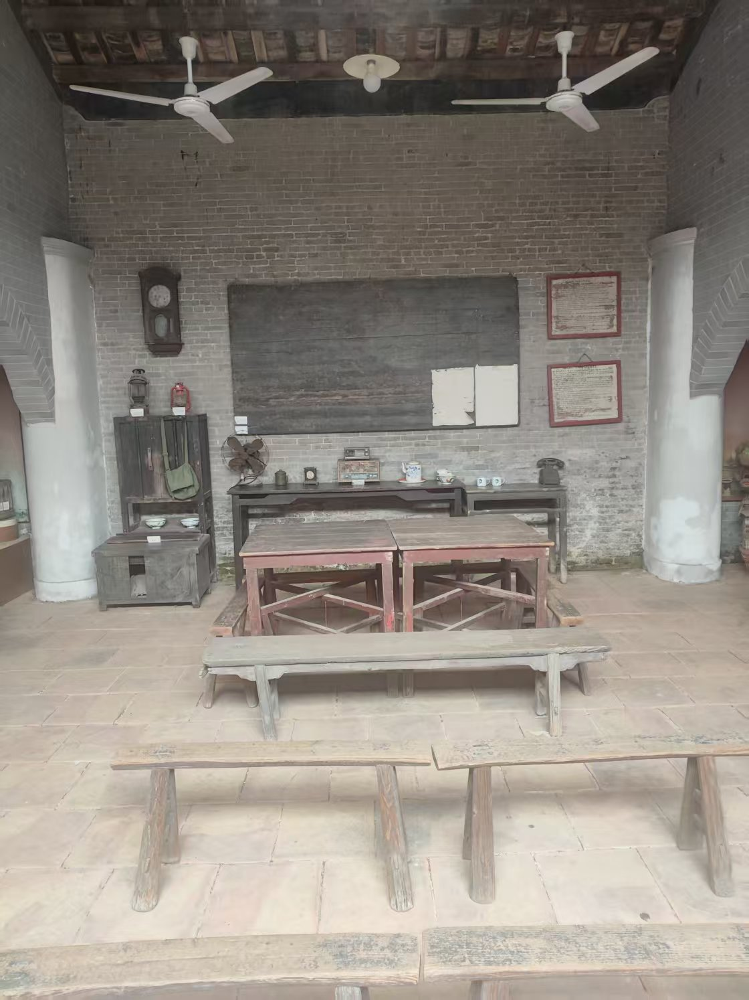

雄才村落
黎雄才故居位于高要区白土镇坑尾村，该村从北宋立村至今已有1000多年的历史，2012年被评为第三批广东省古村落、广东省“最具开发潜力村落”。黎雄才故居始建于清代，坐北向南，砖木结构，面阔三间，是由正屋、两廊、天井、门楼组成的三间两廊合院式建筑，保存了清代岭南建筑特色，是黎雄才出生及少年成长的住所，具有一定的纪念意义和历史、人文价值。2021年公布为肇庆市文物保护单位。 白土镇于2016年9月在雄才故居的基础上成立肇庆市高要家训廉政教育基地。 基地共有5个展馆，分别为高要家训馆、坑尾村家训馆、怡和堂书院展馆、雄才故居展馆以及生产队队部展馆,五大展馆以家训家风为主题， 一共展出1000多件与家训文化、历史风俗相关展品，全面展示了高要千百年来形成并留存下来的优秀家规家训。该基地于2016年9月28日正式投入使用。

 




